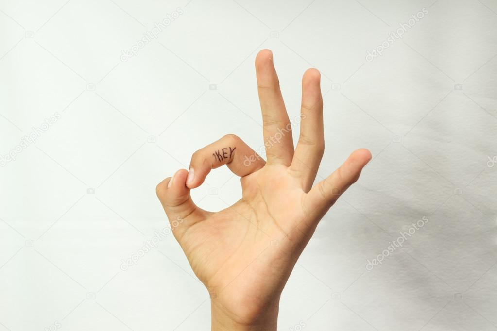
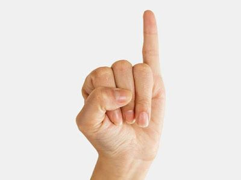

A testbeszéd az ember érzelmi állapotának külső leképződése egy olyan gesztuson vagy mozdulaton keresztül, amely akár tudat alatt is rávilágít az adott személy aktuális érzelmeire. Például az a személy, aki fél, összefonja a karját, egyfajta bástyát létrehozva maga előtt. A test jelzéseiről és ezeknek a jelentőségeiről a legtöbb embernek fogalma sincsen, ámbár egy beszélgetés folyamán az üzenetek jó része a testbeszéd segítségével jut el a másik félhez. A testbeszéd megértéséhez egyszerre kell hallgatnunk, amit mond az alany, és közben figyelni a körülményeket, mivel csak így lehetséges megállapítani a tényeket.
"A köröm, Q zakóuij. a cipő, a nadrág térde, a mutatóés hüvelykujj börkeményedései, az arckifejezés, a mandzsetta
vagy o mozgás külön-külön teljesen világossó teszi
egy ember foglalkozását Hogy együtt mindez sehogy sem
igazítja el a hozzóértőt, az szinte felfoghatatlan."
SHERLOCK HOLMES, 1892
|  |  | |
| Európa: egy, Ausztrália: Ezt neked! (fölfelé böködés), Elterjedt használat: Autóstop, jó, rendben, Görögország: Kapd be! (előre mozgatás), Japán: férfi, öt, | Európa és Észak-Amerika, Magyarországon ritkán használatos: Rendben, oké, Mediterrán régió, Oroszország, Brazília, Törökország: Testnyílás, szekszuális sértés, homokos férfi, Tunézia, Franciaország, Belgium: nulla, értéktelen, Japán: pénz, fémpénz, | Mediterrán országok: kis pénz, Bali: rossz, Japán: nő, Dél-Amerika: vékony, Franciaország: nem dőlök be! |